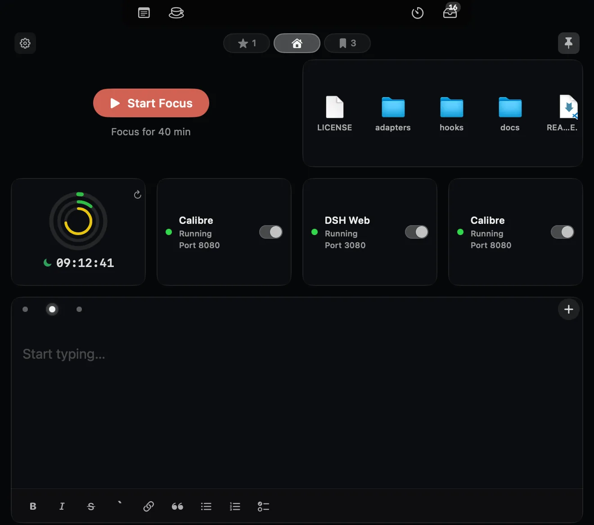

macOS 15+ · 原生 Swift · Apple Silicon 与 Intel 通用
把 Mac 刘海
变成你的控制台
鼠标移到屏幕顶部中央的刘海，抽屉从刘海向下展开，网格里是各个插件提供的块：Markdown 笔记、文件暂存区、剪贴板历史、系统监控。核心只负责刘海交互、窗口管理与布局，功能全部以插件形式提供。
公开构建使用临时签名，未经过 Apple 公证，首次启动需右键点击应用选择「打开」。

它解决什么问题
不是又一个菜单栏图标，而是把屏幕顶部那块一直被浪费的黑色区域变成常驻入口。
-
贴近刘海
所有界面都锚定在屏幕顶部中央：紧凑态常驻刘海两侧，展开态从刘海向下展开，不抢焦点、不占桌面。
-
插件宿主
核心只承担刘海交互、窗口管理、插件加载与布局引擎；功能由插件提供，第三方 .bundle 可以动态安装。
-
可改的抽屉网格
每个块都能拖拽重排、缩放、增删；槽位随图标数量增减，而不是固定几格。编辑模式下直接改布局。
-
本地优先
笔记与暂存记录只保存在本机，覆盖安装应用不会删除数据；暂存区只持有文件引用，绝不移动或删除原文件。
-
不打扰
以 accessory 策略运行：没有 Dock 图标，只有一个状态栏菜单项；鼠标离开停留区就自动收起。
看它怎么动
两段静音循环演示：日常使用与编辑布局。鼠标离开停留区后抽屉自动收起。
日常使用
移到刘海展开抽屉，块一瞥即读：番茄钟计时、服务开关、文件暂存与笔记都在同一屏里。
编辑布局
进入编辑模式后拖动、缩放、增删块，槽位随内容增减，退出即生效。
个官方插件随安装包内置
全部官方插件随应用安装包提供，装好即可用；第三方插件以 .bundle 形式动态安装，同样会出现在抽屉网格与紧凑区。
安装
下载包同时支持 Apple Silicon 与 Intel，要求 macOS 15 或更高版本。
-
下载磁盘映像
取用最新版的 NotchCenter.dmg（也可以下载 zip 包）。
-
拖入「应用程序」
挂载后把 NotchCenter.app 拖进「应用程序」文件夹；zip 包解压后同样是这一步。
-
首次启动右键打开
右键点击应用选择「打开」。如果仍被拦截，到「系统设置 → 隐私与安全性」点击「仍要打开」。